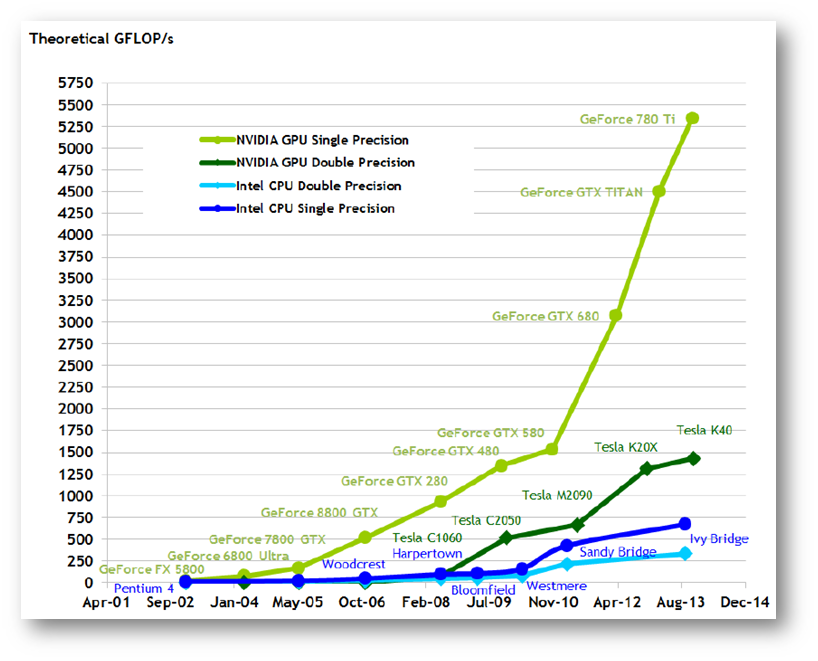

小喵的唠叨话：小喵的研究生生涯做的事图像识别相关的内容，主要使用的技术是深度学习。由于研究需要，不免会用到一些开源的程序，比如caffe（一个卷积神经网络的训练框架）等。使用卷积神经网络，可以很好的解决各类问题，但同时也面临着高昂的计算的问题，而GPU机器，就是一个很好的超级计算机。虽然小喵很少直接编写GPU的程序，但是通过对GPU的更深入理解，可以帮助很好的理解各种框架，以及做必要的修改。 好啦，闲话少说，我们言归正传。 本文中，我们主要介绍以下几个问题：
- 什么是GPU
- 什么是CUDA
- 如何学习CUDA
一、我们每个人都拥有自己的超级计算机
现在，主流的电脑都会配置一个或多个GPU，也叫做显卡。我们都知道，玩大型游戏少不了一块好显卡，做视频编辑也需要好显卡，现在我要说，做科学计算更需要一块好显卡。 那么显卡具体有什么功能呢？ 答案是：计算 是的，显卡的实际功能就是计算，尤其是简单的大量的计算。 我们在玩游戏的时候，会有很多华丽的场景，特效，然而只有好的显卡才能让我们开启全特效。场景的渲染其实就是一个计算的过程。比如，游戏中人物的影子，精细的游戏中的影子并不是简单的贴图，而是根据光照，物体的空间分布和大小形状，来计算出物体在地面或者其他物体上的投影，所以才能达到以假乱真的强烈视觉体验。 视频编辑也是如此，尤其是渲染动画的时候，同样是通过GPU强大的计算能力，才能将各种指令设置，变成我们所见到的各种形形色色的特效。 最后，我们知道科研过程的关键有一点就是计算，既然GPU有这如此强大的能力（有多强大，我们稍后介绍），如果可以用于科研，岂不是很强大的工具？ 除此之外，GPU还可以用于轨道模拟，3D建模等等，总之只要是需要计算的地方，都很可能可以通过使用GPU来优化。
那么GPU的计算能力有多强呢？这里引用NVIDIA的一张图像来说明。

这是一张摘自NVIDIA官网的一张图，有木有很吃惊。随着时间的推进，GPU的发展速度远超过CPU，目前GPU的计算能力已然超过CPU几十倍！ 单从构造上说，一个GPU通常会有16个SM（可以理解为CPU的核，目前CPU常见的是双核和四核），每个SM又同时存在32个SP（现在应该变成了更多数目的CUDA core），即可以同时处理32个数（CPU一个核一次只能处理一个数），另外GPU拥有远多于CPU的寄存器和运算单元。除此之外，GPU的指令模式（SPMD）和CPU（MIMD）完全不同，内存管理也最大化的显示的交给程序员来掌控。如果设计合理，将程序加速100倍也毫不过分。
这就是GPU，隐藏在我们电脑中的超级计算器。
二、我们如何使用GPU
早期的GPU主要用于图像处理。而一群脑洞大开的科学家发现GPU的具有强大的计算潜能，如果合理挖掘，定前途无可限量。于是开始了早期的GPU用于科学计算的编程。由于GPU本身主要用于处理对象，因此访问GPU，必须通过相关的图像接口。但是只要，将待处理的数据和运算构造成GPU中定义的图像和操作的形式，那么GPU就可以求解。
从而就出现了两个问题：
- 早期的GPU只支持OpenGL等图像处理接口，因此，在用于计算之前，我们不得不先学习图像操作的这些知识。
- 我们掌握了图像接口的编程以后，还要把我们要处理的问题合理设计成能够用图像处理方式解决的问题。
从各种意义上来说，这都不是一件很容易的事情。 那么，既然我们对GPU的计算能力如此垂涎，为什么不能创造出适合普通程序员编写GPU程序的方法呢？
当然可以！
这时就不得不提NVIDIA这家公司。我们的显卡通常分为两类，A卡和N卡。A是AMD，N就是NVIDIA（最近似乎AMD也开始支持CUDA了）。NVIDIA为了让GPU变得更通用，便选取了当时最流行的C语言作为基本语言（现在也很流行），通过对C语言进行拓展（增加了一些关键字等），实现了使用C语言编写GPU程序的壮举，同时很好的封装了GPU的图像接口，抽象出独立于图像的程序和内存模型，让程序员们在不了解图像接口的情况下，也能编写出高效的GPU程序，受过广大程序员，科研人员的宠爱！这就是CUDA！一个我们最熟悉的全新的语言！
目前CUDA已经支持C，C++和Python。并且有了很多快速运算的代数库，可以满足大多数的应用的需求。
三、CUDA学习会不会很难
最后，当然就要说到如何学习CUDA。
之前也提到过，CUDA语言就是拓展版的C语言，语法上没有什么难度。我们只需要知道几个拓展修饰关键字，以及工作方式即可。之后我们需要学习CUDA的硬件结构与线程网格模型。再然后是最重要的主要的内存（GPU上的内存，通常也称为显存）的知识。GPU有寄存器内存，共享内存，全局内存，常量内存，纹理内存五种，每种都有其独特的特性。熟悉各种内存的特性，会对之后的GPU编程有极大地帮助。最后了解CUDA编程的常用的算法策略，熟悉CUDA的代数库，多显卡编程等。
小喵会一直持续更新该类别的博客，学习并分享。
以上便是这篇博客的主要内容。
最后，转载请注明出处。
欢迎转载和分享~